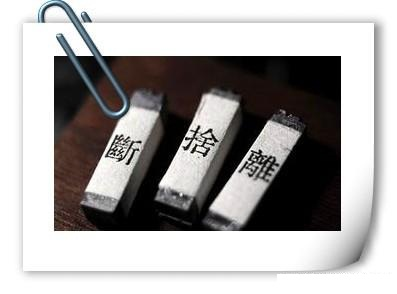
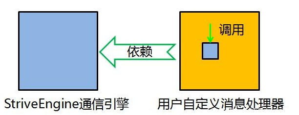
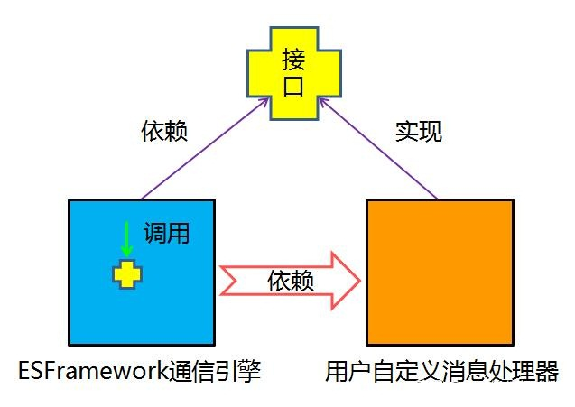
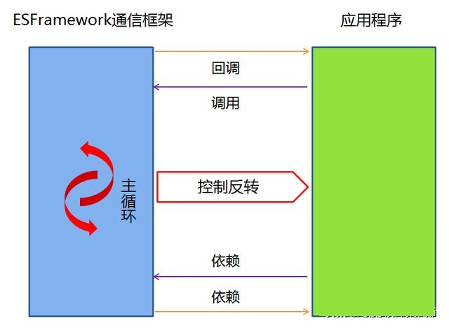
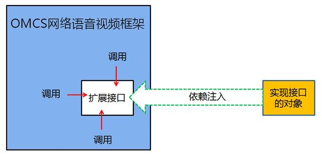

搞不懂的高深术语 依赖倒置•控制反转•依赖注入•面向接口编程
cpp软件架构狮 2019-03-27 19:48:02
那些年，空气中仿佛还能闻到汉唐盛世的余韵，因此你决不允许自己的脸上有油光，时刻保持活力。然而，你一定曾为这些“高深术语”感到过困扰——依赖倒置•控制反转•依赖注入•面向接口编程。也许时至今日，你仍对它们一知半解。不过就在今天，这一切都将彻底改变！我将带领你以一种全新的高清视角进入奇妙的编程世界，领略涵泳在这些“高深术语”中的活泼泼的地气，以及翩跹于青萍之末的云水禅心。
·内聚
内聚，通俗的来讲，就是自己的东西自己保管，自己的事情自己做。
经典理论告诉我们，程序的两大要素：一个是数据（data），一个是操作（opration）。而 PASCAL之父Nicklaus Wirth则进一步提出了“程序 = 数据结构 + 算法”的著名公式。虽然提法上有所差异，但是其根本内涵却是一致的，微妙的差别在于，“数据 + 操作”是微观的视域，“数据结构 + 算法”则是中观的视域。而在宏观的视域下，我认为“程序 = 对象 + 消息”。对象是什么？对象就是保管好自己的东西，做好自己的事情的程序模块——这就是内聚！传统的面向过程编程方法由于割裂了数据结构和算法，使得软件的内聚性普遍低迷，曾一度引发了软件危机。试想，大家都自己的东西不好好保管，自己的事情也不好好做，不引发危机才怪呢！当然，对象的内聚只是内聚的一个层次，在不同的尺度下其实都有内聚的要求，比如方法也要讲内聚，架构也要讲内聚。
《周易·彖传》中讲“乾道变化，各正性命，保合太和，乃利贞”，就是要求每一个个体因循着各自的禀赋而努力成就各自的品性，然后各自保全，彼此和合，最终达成宇宙的完满状态。《论语·宪问》中，子路问君子。子曰：“修己以敬。”曰：“如斯而已乎？”曰：“修己以安人”，更是明确的教导我们要不断提高自身的内聚性，最大限度地减少给他人造成的麻烦，从而达到安人、安百姓、安天下的目标。我想，成长的过程就是一个不断提升内聚的过程。“自己的东西自己保管，自己的事情自己做”，这些孩提时代的教诲，放到今天仍能让不少“大人”脸红不已。太多的人保管不好自己的“东西”，保管不好自己的身体，保管不好自己的婚姻，更保管不好自己如蛛丝般震颤飘荡的狂乱的心。至于做好自己的事情，则更是惘然，甚至很多人连自己的事情是什么都搞不清楚，因此浑浑噩噩，饱食终日。内聚，是一个值得我们好好反思的问题。
·依赖·耦合
在面向对象编程中，对象自身是内聚的，是保管好自己的数据，完成好自己的操作的，而对外界呈现出自己的状态和行为。但是，没有绝对的自力更生，对外开放也是必要的！一个对象，往往需要跟其他对象打交道，既包括获知其他对象的状态，也包括仰赖其他对象的行为，而一旦这样的事情发生时，我们便称该对象依赖于另一对象。只要两个对象之间存在一方依赖一方的关系，那么我们就称这两个对象之间存在耦合。 比如妈妈和baby，妈妈要随时关注baby的睡、醒、困、哭、尿等等状态，baby则要仰赖妈妈的喂奶、哄睡、换纸尿裤等行为，从程序的意义上说，二者互相依赖，因此也存在耦合。首先要说，耦合是必要的。我们来看以下这个实验。
【王阳明与山中之花】
class FlowersInMountain
{
public bool IsBloomed//盛开状态
{
get { return true; }
}
}
class WangYangMing
{
///
/// 王阳明会稽山赏花
///
/// 山花盛开与否
public bool AdmireFlowers()
{
return ?;
}
}
static void Main()
{
WangYangMing wym = new WangYangMing();
FlowersInMountain flower = new FlowersInMountain();
if (wym.AdmireFlowers())
{
MessageBox.Show("我看见山花开放！");
}
else
{
MessageBox.Show("我看见山花未开！");
}
}
由于王阳明这个对象不依赖山花这个对象，又没有其他的方式来获知山花的盛开状态，所以他要么选择不说，要么瞎说，但不说编译是通不过，而瞎说作为王阳明来讲也是通不过的，所以这个系统是无法成立的。要想系统成立，必须要这样写：
public bool AdmireFlowers()
{
return flower.IsBloomed; ;
}
无论这个山花对象是怎么来的，作为参数传入还是作为属性设置、还是在内部构造出来，总之，王阳明与山花之间发生了依赖，二者之间产生了耦合。 当然，这是一个很浅显的问题。有趣的是王阳明对此事的看法：“你未看花时，花与你同寂；你来看花，花于你则一时分明起来。可见心外无物！”王阳明讲的是对的！“心外无物”翻译技术语言是这样的：不存在耦合的两个对象必然拿不到对方的引用！
·耦合度·解耦和
耦合的程度就是耦合度，也就是双方依赖的程度。上文所说的妈妈和baby就是强耦合。而你跟快递小哥之间则是弱耦合。一般来说耦合度过高并不是一件好事。就拿作为IT精英的你来说吧，上级随时敦促你的工作进度，新手频繁地需要你指导问题，隔三差五还需要参加酒局饭局，然后还要天天看领导的脸色、关注老婆的心情，然后你还要关注代码中的bug 、bug、bug，和需求的变化、变化、变化，都够焦头烂额了，还猝不及防的要关注眼睛、颈椎、前列腺和头发的状态，然后你再炒个股，这些加起来大概就是个强耦合了。从某种意义上来说，耦合天生就与自由为敌，无论是其他对象依赖于你，还是你依赖其他对象。比如有人嗜烟、酗酒，你有多依赖它们就有多不自由；比如有人家里生了七八个娃，还有年迈的父母、岳父母，他们有多依赖你，你就有多不自由。所以老子这样讲：“五音令人耳聋，五色令人目盲，驰骋狩猎令人心发狂，难得之货令人行妨。”卢梭也是不无悲凉的说“人生而自由，却又无往而不在枷锁中”。因此，要想自由，就必须要降低耦合，而这个过程就叫做解耦和。

·依赖倒置（Dependence Inversion Principle）
解耦和最重要的原则就是依赖倒置原则：
高层模块不应该依赖底层模块，他们都应该依赖抽象。抽象不应该依赖于细节，细节应该依赖于抽象。
《资本论》中都曾阐释依赖倒转原则——在商品经济的萌芽时期，出现了物物交换。假设你要买一个IPhone，卖IPhone的老板让你拿一头猪跟他换，可是你并没有养猪，你只会编程。所以你找到一位养猪户，说给他做一个养猪的APP来换他一头猪，他说换猪可以，但是得用一条金项链来换——所以这里就出现了一连串的对象依赖，从而造成了严重的耦合灾难。解决这个问题的最好的办法就是，买卖双发都依赖于抽象——也就是货币——来进行交换，这样一来耦合度就大为降低了。
再举一个编程中的依赖倒置的例子。我们知道，在通信中，消息的收发和消息的处理往往密不可分。就一般的通信框架而言，消息的收发通常是已经实现了的，而消息的处理则是需要用户来自定义完成的。先看一个正向依赖的例子：轻量级通信引擎StriveEngine。tcpServerEngine是StriveEngine.dll提供通信引擎，它发布有一个MessageReceived事件。假设我定义了一个CustomizeHandler类来用于消息处理，那么CustomizeHandler的内部需要预定tcpServerEngine的MessageReceived事件，因此customizeHandler依赖于tcpServerEngine，这就是一个普通的依赖关系，也就是高层模块依赖于低层模块。


而ESFramework通信框架则应用了依赖倒转原则。ESFramework定义了一个IcustomizeHandler接口，用户在进行消息处理时，实现该接口，然后将其注入到rapidPassiveEngine客户端通信引擎之中。
class CustomizeHandler: ICustomizeHandler
{
public void HandleInformation(string sourceUserID, int informationType, byte[] info)
{
······
}
public byte[] HandleQuery(string sourceUserID, int informationType, byte[] info)
{
······
}
}
IRapidPassiveEngine rapidPassiveEngine = ESPlus.Rapid.RapidEngineFactory.CreatePassiveEngine();
CustomizeHandler customizeHandler = new CustomizeHandler();
rapidPassiveEngine.Initialize("ID", "passWord", "127.0.0.1", 9000, customizeHandler);
很明显，相比于上一个例子，这里的依赖关系变成了rapidPassiveEngine依赖于customizeHandler，也就是说依赖关系倒置了过来，上层模块不再依赖于底层模块，而是它们共同依赖于抽象。rapidPassiveEngine依赖的是IcustomizeHandler接口类型的参数，customizeHandler同样是以实现的接口的方式依赖于IcustomizeHandler——这就是一个依赖倒置的典范。
·控制反转（Inversion of Control）
控制反转跟依赖倒置是如出一辙的两个概念，当存在依赖倒置的时候往往也存在着控制反转。但是控制反转也有自己的独特内涵。
首先我们要区分两个角色，server 跟 Client，也就是服务方和客户方。提供服务端的一方称为服务方，请求服务的一方称为客户方。我们最熟悉的例子就是分布式应用的C/S架构，服务端和客户端。其实除此之外，C/S关系处处可见。比如在TCP/IP协议栈中，我们知道，每层协议为上一层提供服务，那么这里就是一个C/S关系。当我们使用开发框架时，开发框架就是作为服务方，而我们自己编写的业务应用就是客户方。当Client调用server时，这个叫做一般的控制；而当server调用Client时，就是我们所说的控制反转，同时我们也将这个调用称为“回调”。控制反转跟依赖倒置都是一种编程思想，依赖倒置着眼于调用的形式，而控制反转则着眼于程序流程的控制权。一般来说，程序的控制权属于Client，而一旦控制权交到server，就叫控制反转。比如你去下馆子，你是Client餐馆是server。你点菜，餐馆负责做菜，程序流程的控制权属于Client；而如果你去自助餐厅，程序流程的控制权就转到server了，也就是控制反转。
控制反转的思想体现在诸多领域。比如事件的发布/ 订阅就是一种控制反转，GOF设计模式中也多处体现了控制反转，比如典型的模板方法模式等。而开发框架则是控制反转思想应用的集中体现。比如之前所举的ESFramework通信框架的例子，通信引擎回调用户自定义的消息处理器，这就是一个控制反转。以及ESFramework回调用户自定义的群组关系和好友关系，回调用户自定义的用户管理器以管理在线用户相关状态，回调用户自定义的登陆验证处理，等等不一而足。再比如与ESFramework一脉相承的轻量级通信引擎StriveEngine，通过回调用户自定义的通信协议来实现更加灵活的通信。

由此我们也可以总结出开发框架与类库的区别：使用开发框架时，框架掌握程序流程的控制权，而使用类库时，则是应用程序掌握程序流程的控制权。或者说，使用框架时，程序的主循环位于框架中，而使用类库时，程序的主循环位于应用程序之中。框架会回调应用程序，而类库则不会回调应用程序。ESFramework和StriveEngine中最主要的对象都以engine来命名，我们也可以看出框架对于程序主循环的控制——它会为你把握方向、眼看前方、轻松驾驭！
·依赖注入(Dependency Injection)
依赖注入与依赖倒置、控制反转的关系仍旧是一本万殊。依赖注入，就其广义而言，即是通过“注入”的方式，来获得依赖。我们知道，A对象依赖于B对象，等价于A对象内部存在对B对象的“调用”，而前提是A对象内部拿到了B对象的引用。B对象的引用的来源无非有以下几种：A对象内部创建（无论是作为字段还是作为临时变量）、构造器注入、属性注入、方法注入。后面三种方式统称为“依赖注入”，而第一种方式我也生造了一个名词，称为“依赖内生”，二者根本的差异即在于，我所依赖的对象的创建工作是否由我自己来完成。当然，这个是广义的依赖注入的概念，而我们一般不会这样来使用。我们通常使用的，是依赖注入的狭义的概念。不过，直接陈述其定义可能会过于诘屈聱牙，我们还是从具体的例子来看。

比如OMCS网络语音视频框架，它实现了多媒体设备（麦克风、摄像头、桌面、电子白板）的采集、编码、网络传送、解码、播放（或显示）等相关的一整套流程，可以快速地开发出视频聊天系统、视频会议系统、远程医疗系统、远程教育系统、网络监控系统等等基于网络多媒体的应用系统。然而，OMCS直接支持的是通用的语音视频设备，而在某些系统中，需要使用网络摄像头或者特殊的视频采集卡作为视频源，或者其它的声音采集设备作为音频源，OMCS则提供了扩展接口——用户自己实现这个扩展的接口，然后以“依赖注入”的方式将对象实例注入到OMCS中，从而完成对音、视频设备的扩展。扩展方法详情参考
“依赖注入”常常用于扩展，尤其是在开发框架的设计中。从某种意义上来说，任何开发框架，天生都是不完整的应用程序。因此，一个优秀的开发框架，不仅要让开发者能够重用这些久经考验的的卓越的解决方案，也要让开发者能够向框架中插入自定义的业务逻辑，从而灵活自由地适应特定的业务场景的需要——也就是说要具备良好的可扩展性。比如上面提到的OMCS网络语音视频框架可应用于音、视频聊天系统、视频会议系统、远程医疗系统、远程教育系统、网络监控系统等等基于网络多媒体的应用系统；以及ESFramework通信框架能够应用于即时通讯系统，大型多人在线游戏、在线网页游戏、文件传送系统、数据采集系统、分布式OA系统等任何需要分布式通信的软件系统中——这种良好的扩展性都与“依赖注入”的使用密不可分！
·面向接口编程
谈到最后，“面向接口编程”已经是呼之欲出。无论是依赖倒置、控制反转、还是依赖注入，都已经蕴含着“面向接口编程”的思想。面向接口，就意味着面向抽象。作为哲学范畴而言，规定性少称为抽象，规定性多称为具体。而接口，就是程序中的一种典型的“抽象”的形式。面向抽象，就意味着面向事物的本质规定性，摆脱感性杂多的牵绊，从而把握住“必然”——而这本身就意味着自由，因为自由就是对必然的认识。
也许以上的这段论述太过“哲学”，但是“一本之理”与“万殊之理”本身就“体用不二”——总结来看，依赖倒置、控制反转、依赖注入都围绕着“解耦和”的问题，而同时自始至终又都是“面向接口编程”的方法——因此，“面向接口编程”天生就是“解耦和”的好办法。由此也印证了从“抽象”到“自由”的这一段范畴的辩证衍化。
“面向对象”与“面向接口”并非两种不同的方法学，“面向接口”其实是“面向对象”的内在要求，是其一部分内涵的集中表述。我们对于理想软件的期待常被概括为“高内聚，低耦合”，这也是整个现代软件开发方法学所追求的目标。面向对象方法学作为现代软件开发方法学的代表，本身就蕴含着“高内聚，低耦合”的思想精髓，从这个意义上来说，“面向对象”这个表述更加侧重于“高内聚”，“面向接口”的表述则更加侧重于“低耦合”——不过是同一事物的不同侧面罢了。
除此之外，我们也能从“面向接口编程”的思想中得到“世俗”的启迪——《论语》里面讲，不患无位，患所以立；不患人之不己知，患其不能也——就是教导我们要面向“我有没有的本事？”、“我有没有能力？”这样的接口，而不是面向“我有没有搞到位子？”、“别人了不了解我？”这样的具体。依我看，这是莫大的教诲！